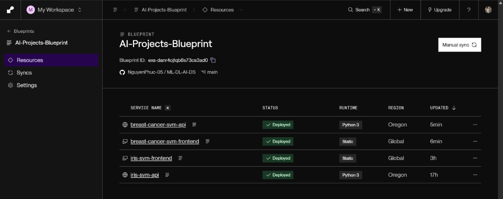

🎛️ Thông số đo lường
Kéo thanh trượt hoặc nhập số.
📊 Biểu đồ Radar
🌸 Setosa
Cánh hoa rất ngắn & nhỏ
🌺 Versicolor
Kích thước trung bình
💐 Virginica
Kích thước lớn nhất
| Giới | |
| Ngành | |
| Lớp | |
| Bộ | |
| Họ | |
| Chi | |
| Loài |
🔍 XAI — Giải thích quyết định phân loại (Explainable AI)
Feature Sensitivity AttributionĐịnh lượng mức độ ảnh hưởng của từng đặc trưng đến kết quả dự đoán của mô hình SVM.
📈 Bản đồ 150 mẫu Iris & Vùng quyết định
Trục X: Petal Length — Trục Y: Petal Width. Điểm ⭐ = Dữ liệu bạn chọn. Vùng màu = Decision Boundary. 💡 Mẹo: Bấm chuột trực tiếp lên đồ thị để 'thả' điểm hoa mới vào!
🎛️ Phòng Thí nghiệm Siêu tham số (Live SVM Playground)
Thử nghiệm thay đổi siêu tham số toán học để quan sát trực tiếp hiện tượng Overfitting (Quá khớp) và Underfitting (Dưới khớp) theo thời gian thực.
Đang kết nối phòng thí nghiệm...
📋 Thông tin Dataset
📜 Hành trình 90 năm của Khoa học Dữ liệu
Từ một luống hoa ở Canada đến thuật toán Machine Learning kinh điển toàn cầu.
 Ronald A. Fisher (1890–1962)
Ronald A. Fisher (1890–1962)📷 Wikimedia Commons, Public Domain
Ronald A. Fisher & Edgar Anderson
Sir Ronald Aylmer Fisher (1890–1962) — được mệnh danh là "Cha đẻ của Thống kê hiện đại" — công bố bài báo lịch sử "The use of multiple measurements in taxonomic problems" trên tạp chí Annals of Eugenics.
Trong bài báo này, Fisher sử dụng 150 mẫu hoa Iris (50 mẫu mỗi loài: Setosa, Versicolor, Virginica) do nhà thực vật học Edgar Anderson thu thập tại bán đảo Gaspé, Canada để giới thiệu phương pháp Linear Discriminant Analysis (LDA) — một trong những thuật toán phân loại đầu tiên trong lịch sử nhân loại.
Fisher đo đạc 4 đặc trưng hình thái: chiều dài đài hoa, chiều rộng đài hoa, chiều dài cánh hoa, chiều rộng cánh hoa. Bốn con số đơn giản này sẽ trở thành "Hello World" của mọi khóa học Machine Learning suốt 90 năm sau.
 Iris versicolor — loài hoa kinh điển
Iris versicolor — loài hoa kinh điển📷 Wikimedia Commons, CC BY-SA 3.0
UCI Machine Learning Repository
Bộ dữ liệu Iris chính thức được đưa vào kho lưu trữ UCI Machine Learning Repository tại Đại học California, Irvine — trở thành bộ dữ liệu benchmark tiêu chuẩn cho mọi thuật toán phân loại mới.
Đến nay, bộ dữ liệu này đã được tải về và sử dụng hàng triệu lần bởi các nhà nghiên cứu, sinh viên và kỹ sư AI trên toàn thế giới. Mọi sinh viên Machine Learning đều bắt đầu hành trình của mình với 150 bông hoa này.

Vladimir Vapnik (1936–)📷 Ảnh do sinh viên cung cấp
Vladimir Vapnik & SVM ra đời
Vladimir Naumovich Vapnik (sinh năm 1936, Liên Xô) — nhà toán học và khoa học máy tính lỗi lạc — cùng với Corinna Cortes công bố bài báo nền tảng về Support Vector Networks trên tạp chí Machine Learning.
Ý tưởng cốt lõi: Thay vì chỉ tìm một đường phân tách, SVM tìm đường phân tách có khoảng cách lề (margin) lớn nhất tới các điểm dữ liệu gần nhất. Điều này giúp mô hình tổng quát hóa tốt hơn trên dữ liệu mới.
SVM nhanh chóng trở thành "vua" của các thuật toán phân loại trong suốt thập niên 2000, trước khi Deep Learning lên ngôi.
 Kernel "chiếu" dữ liệu lên chiều cao hơn
Kernel "chiếu" dữ liệu lên chiều cao hơn📷 Unsplash
Kernel Trick — Cánh cửa phi tuyến
Bước đột phá quyết định: Kernel Trick cho phép SVM giải quyết các bài toán phi tuyến tính mà không cần tính toán trực tiếp trong không gian chiều cao.
Hàm kernel RBF (Radial Basis Function) — chính là kernel được sử dụng trong dự án này — "chiếu" dữ liệu lên một không gian chiều cao hơn nơi chúng trở nên phân tách tuyến tính. Tất cả diễn ra ngầm thông qua phép tính tích vô hướng, không cần biến đổi tọa độ thực sự.
 Iris + SVM = Kinh điển bất tử
Iris + SVM = Kinh điển bất tử📷 Unsplash
Hôm nay — Bạn đang viết tiếp câu chuyện
Sau 90 năm, bộ dữ liệu Iris và thuật toán SVM vẫn là bộ đôi kinh điển được giảng dạy trong mọi khóa học Machine Learning trên toàn thế giới — từ Stanford, MIT cho đến các trường đại học Việt Nam.
Ứng dụng Iris AI Explorer mà bạn đang sử dụng chính là minh chứng sống cho hành trình vĩ đại đó: từ 150 bông hoa được đo đạc bằng tay trên cánh đồng Canada năm 1936, đến một ứng dụng web AI hiện đại chạy trên đám mây năm 2026.
📝 Nguồn ảnh sử dụng
- Ronald A. Fisher — Wikimedia Commons, Public Domain
- Iris Setosa, Versicolor, Virginica — Wikimedia Commons, CC BY-SA 3.0
- Vladimir Vapnik — Ảnh do sinh viên cung cấp
- Ảnh minh hoạ Kernel Trick & AI — Unsplash (Free License)
- Ảnh đại diện sinh viên — Ảnh cá nhân
🧠 Support Vector Machine — Giải thích trực quan
Thuật toán đằng sau mọi dự đoán bạn vừa thấy.
Bài toán: Tìm đường biên tối ưu
Cho một tập dữ liệu gồm 2 lớp (ví dụ: Setosa và Versicolor), có vô số đường thẳng có thể chia tách chúng. Nhưng đường nào là tốt nhất?
SVM trả lời: Đường tốt nhất là đường có khoảng cách (margin) lớn nhất tới các điểm dữ liệu gần nhất ở cả hai phía. Các điểm gần nhất này gọi là Support Vectors — chính là "trụ cột" quyết định vị trí đường biên.
🔵 Lớp A (Setosa) — 🟠 Lớp B (Versicolor) — Đường xanh = Hyperplane — Vùng mờ = Margin tối đa. Các điểm có chữ "SV" = Support Vectors.
Tại sao Margin lớn lại tốt?
Hãy tưởng tượng bạn đang vẽ đường phân cách giữa 2 đội bóng trên sân. Nếu đường kẻ nằm sát một đội, chỉ cần một cầu thủ đi lệch một bước là "lấn sân" sang đội kia → dự đoán sai.
Nhưng nếu đường kẻ nằm chính giữa với khoảng cách đều nhau về hai phía, thì cả hai đội đều có "vùng đệm" an toàn → mô hình tổng quát hóa tốt hơn trên dữ liệu mới chưa thấy bao giờ.
Kernel Trick — Khi dữ liệu không "thẳng hàng"
Trong thực tế, dữ liệu hiếm khi phân tách tuyến tính gọn gàng. Ví dụ: Versicolor và Virginica có kích thước chồng chéo nhau rất nhiều.
Kernel Trick giải quyết vấn đề này bằng cách "chiếu" dữ liệu từ không gian 2D lên không gian chiều cao hơn (3D, 4D,...). Trong không gian mới, dữ liệu bỗng trở nên phân tách được!
4 phiên bản Kernel trong dự án này
Dự án này cung cấp 4 phiên bản mô hình SVM, mỗi phiên bản sử dụng một hàm nhân (kernel) khác nhau:
- v1 — Linear: Phân tách bằng đường thẳng/mặt phẳng. Đơn giản, nhanh, phù hợp khi dữ liệu phân tách tuyến tính (ví dụ: Setosa vs Versicolor).
- v2 — RBF (Radial Basis Function): Tạo đường biên phi tuyến linh hoạt. Mặc định và phổ biến nhất. Xử lý tốt vùng chồng chéo giữa Versicolor-Virginica.
- v3 — Polynomial: Sử dụng đa thức bậc cao để phân tách. Có thể tạo ra đường biên phức tạp hơn Linear nhưng ít linh hoạt hơn RBF.
- v4 — Sigmoid: Mô phỏng hành vi của mạng neural đơn lớp. Ít dùng trong thực tế nhưng có giá trị so sánh học thuật.
Bạn có thể chuyển đổi giữa các kernel ở tab "Phân tích" để so sánh kết quả, và xem Decision Boundary ở tab "Dữ liệu" để trực quan hóa cách mỗi kernel chia dữ liệu khác nhau!
Tại sao SVM phù hợp với Iris?
Bộ dữ liệu Iris: 150 mẫu, 4 đặc trưng, 3 lớp. Đây là bài toán kích thước nhỏ, số chiều thấp — chính xác là thế mạnh tuyệt đối của SVM:
- Deep Learning cần hàng triệu mẫu → SVM chỉ cần vài trăm mẫu đã đạt độ chính xác cực cao.
- SVM có cơ sở toán học chặt chẽ (lý thuyết VC dimension) — kết quả có thể giải thích và chứng minh được.
- Không bị overfitting dễ dàng nhờ cơ chế tối ưu margin.
- Kết hợp kernel RBF, SVM xử lý tốt các vùng chồng chéo giữa Versicolor và Virginica.
⚔️ Đấu trường 4 Kernel (Kernel Arena Benchmark)
So sánh song song 4 mô hình SVM theo thời gian thực: Độ chính xác, Thời gian suy luận (Latency), Số lượng Support Vectors và Bề mặt quyết định.
📁 Phân loại Hàng loạt (Batch CSV Prediction)
Tải file CSV chứa danh sách mẫu hoa để dự đoán đồng loạt trong 0.1 giây.
Kéo thả file .CSV vào đây hoặc chọn từ máy tính
Định dạng: sepal_length, sepal_width, petal_length, petal_width, kernel (tùy chọn)📋 Lịch sử Dự đoán (Database)
| # | SL | SW | PL | PW | Kernel | Kết quả | Xác suất | Thời gian |
|---|
Chưa có dự đoán nào. Hãy thử ngay ở tab "Phân tích"!
Nguyễn Xuân Phúc
Sinh viên ngành Khoa học Dữ liệu
Trường & Khoa
Trường Đại học Sư phạm
Đại học Đà Nẵng
Khoa Toán - Tin
Môn học
Học máy Nâng cao
Advanced Machine Learning
Giảng viên hướng dẫn
TS. Phan Trần Đức Minh
Khoa Toán - Tin, Trường ĐHSP Đà Nẵng
🌸 Về Dự án này
Iris AI Explorer là đồ án môn học Học máy Nâng cao, xây dựng ứng dụng web tương tác để phân loại 3 loài hoa Iris (Setosa, Versicolor, Virginica) sử dụng thuật toán Support Vector Machine (SVM) với 4 phiên bản kernel khác nhau. Dự án bao gồm Backend API (FastAPI + MySQL), Frontend tương tác (Vanilla JavaScript), và hệ thống trực quan hóa Decision Boundary, biểu đồ Radar, Scatter Plot.